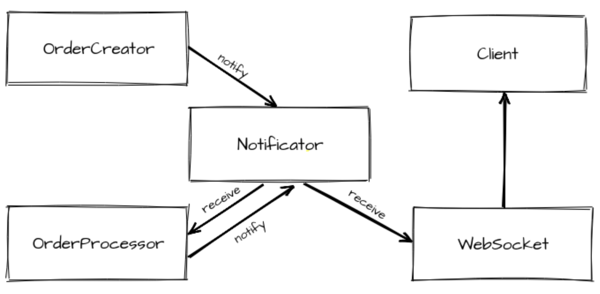
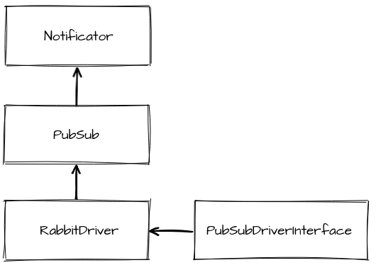
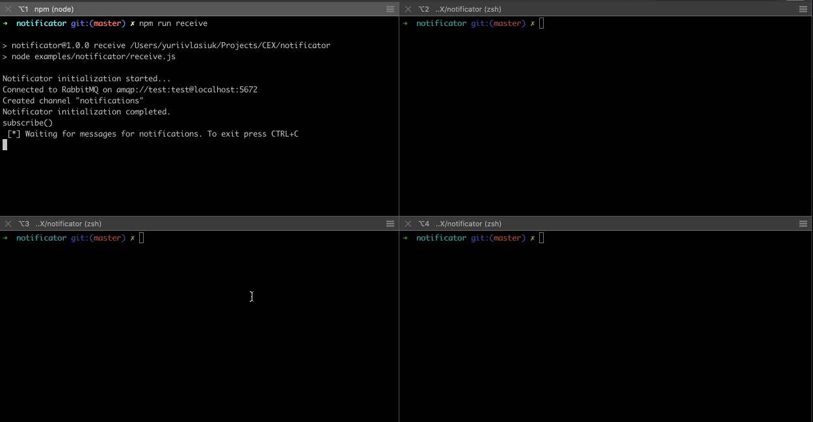
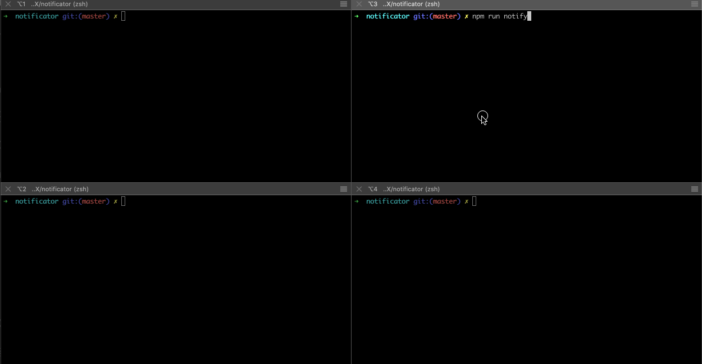
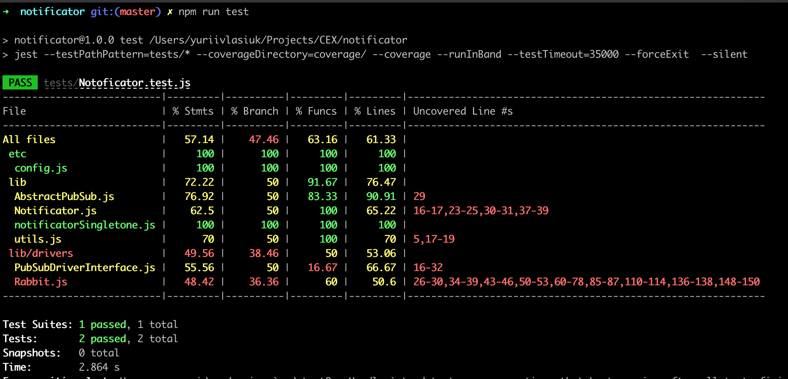

Introduction
I want to explain the usage of this post in common use cases:
- case 1: web application which can send pop-up messages about something that happen in the system (e.g. your order was completed)
- case 2: realtime chat between multiple users (e.g. chat room to which often connect and disconnect new clients)
- case 3: an event-based system where one event sent from the source could trigger other modules to process them (e.g. image editor after compressing image upload it to temporary storage and user will start downloading automatically)
Of course in all of these cases, the task is more complex. It may seem, on first sight, that we will connect to our backend which will send notifications from one clients to others. But if we have few processes of NodeJS (e.g. pm2 cluster or docker swarm), different users will be connected to different processes hidden behind load balancer.
The problem
80% percent of NodeJS developers do the same mistake - they assume that their application will work as a single process. You can say that you application is one service but if you use pm2 in cluster mode then you have multiple processes already.
Imagine that you create orders in one instance of the application, process them in another instance and send via WebSocket info to the client in third place. Creating and changing orders statuses should trigger client notification on the web interface. Also OrderProcessor is subscribed for receiving events about order creation to start processing when new order is created.

This was not an issue till you were performing all of this in one process, because you can insert notify call in every place you need. But in the current situation, we have distributed processing between multiple nodes. This means that you need to have some tools to exchange events between these independently running processes.
A good practice is to avoid keeping any state in the process to let it run independently.
Usually, developers assume their application will be running in a single process. They start to keep some state in process memory (e.g. changes of order status, identifiers etc.). As a result, this leads to issues when the application needs to be scaled (multiple nodes will not have a shared state which changed in one of them). A good practice is to avoid keeping any state in the process to let it run independently. All needed changes can be sent to every node as an event, as well as emitted by this node if it becomes a source of changes. Notificator itself is a way to make backend stateless and delegate notifications to an independent process.
Tools to tackle it
Currently, we have such event-based multi-tenant project with similar requirements. And we built a specific service for sending notifications between independent processes. We used NodeJS and RabbitMQ as a transport. Also we use a docker to develop and deploy to production. RabbitMQ server is running as a docker container as well. So minimal stack for this solution is:
- NodeJS v12
- RabbitMQ v3.8.4
- Docker
And I want to describe and analyze the approaches and patterns which we used during the implementation. Here we go.
Architectural background
To begin with the design that we used, we often try to keep the Layers Architecture pattern in our projects. This means that our application has multiple zones of responsibility, which should be kept only inside separate parts, they should not leak from the lower level layer to the upper one. You can find the REST backend using this approach on our Starter app for NodeJS which is open-sourced now.
We also try keep in mind the Dependency Inversion Principle:
High-level modules should not depend on low-level modules. Both should depend on abstractions.
Abstractions should not depend upon details. Details should depend upon abstractions.
In our case this means that connecting to RabbitMQ or other PubSub should not be implemented directly in the application, but it should be hidden behind an abstraction. You can save yourself from the pain in the future by using this approach in case when you may need to replace RabbitMQ with Redis at some point. If you have an abstraction that will not change, you will need to implement the same interface methods that were previously implemented using another driver for RabbitMQ.
Creating abstraction layers
So we used the same approach when built our Notificator module. First of all we defined the layers:
- Notifcator - High-level class used on Service Layer of backend which allows to
notifyabout events andreceivethem. - PubSub - Class used by Notificator to
publishandsubscribeto events. - PubSubDriverInterface - Interface defines methods needed to implement for PubSub.
- RabbitDriver - Actual implementation for connecting to RabbitMQ and using it as a transport for events

Also we decided to use Dependency Injection: each lower-layer will be injected in a constructor of upper-layer class.
Of course these all are not the application layers. Notificator itself was used on Service layer of our backend.
Let’s have a look how we can implement this layers of a notificator module one by one.
Notificator
First of all let’s define the Notificator class. It will be used to notify about some events which happen as well as give possibility to receive this event in other node of application. I defined such requirements for this class:
- use some
pubsubfor performing events exchange which should be injected (Dependency Injection) - have
initial entrypoint which allows establishing a connection to the PubSub server and also creates a channel for notifications - have
notifymethod for publishing messages - have
receivemethod for subscribing to messages
1 | // Notificator.js |
As a result we have a simple class which keep only required logic. Next step will be defining an abstraction.
PubSub
To define an abstraction for the pubsub provider we should create a class that will call methods directly from a driver. This driver will give the implementation of the interaction with the infrastructural part – RabbitMQ in our case. So, this class has the following requirements:
- use
driverfor interacting with pubsub provider - check that pubsub
driverimplements correct interface - have
connectmethod for connecting to the pubsub process - have
createChannelmethod for creating a channel for the messages exchange - have
publishmethod for publishing message to the channel - have
subscribemethod for subscribing to the channel - have possibility in the
subscribemethod to pass a custom messageHandler to process messages
1 | // PubSub.js |
PubSubDriverInterface
The main role of this interface is just to enumerate methods and their signatures. They will become sort of “contract” between our application and pubsub service. This means that you will need to implemente them in a case when you decided to replace the current pubsub with another. In this case other application code will not be affected by this change at all. Basically, the requirements for driver are the following:
- constructor should set empty objects to class context for keeping
channelsandhandlers - have
connectmethod throwing error if not implemented - have
createChannelmethod throwing error if not implemented - have
publishmethod throwing error if not implemented - have
subscribemethod throwing error if not implemented - signature of
createChannelmethod should accept name of a channel to create - signature of
publishmethod should accept name of a channel and message to publish - signature of
subscribemethod should accept name of a channel to subscribe and handler
1 | // PubSubDriverInterface.js |
Now when abstractions are described, we can go towards the implementation of an exact driver.
RabbitDriver
For the interaction with RabbitMQ there are quite a few packages on NPM. Actually, I tried to use some of them, but finally I chose amqplib. It seems to be stable, has many installs on NPM, 100% test coverage, well written documentation and it was also used in the examples of Official RabbitMQ manual for JavaScript. As you may guess, most of the code of this part is taken from these examples. I changed some methods a bit to make them promisified.
Also, the logic was wrapped in a class methods for RabbitDriver so I will explain each of them. This class implements methods of PubSubDriverInterface that we previuosly described.
constructor
Constructor of RabbitDriver will have specific for interaction with RabbitMQ process options. Here is main re
- should accept
argumentsobject - arguments should have
endpointentry to define where pubsub process is running - arguments should have
loginentry to define login credential to the pubsub process - arguments should have
passwordentry to define the password credential to the pubsub process
1 | // Rabbit.js |
connect
The amqp.connect() is used inside to perform the connection to the RabbitMQ server. I decided to prepare a connection string. But you can use object with multiple params instead of concatenated URL as a first argument. Second optional argument is a callback which can get an error and connection. As a result of a successful connection I save it to this for next usage in other methods.
1 | // Rabbit.js |
createChannel
The next thing we need is to create a channel. The connection method connection.createChannel() is used for this. It also has a callback which gives an error and a channel. The channel will be saved to the class context object using channelName mapping. This can help us if we need to support multiple channels. A single channel that we called notifications was enough for the current Notificator.
Also we need to call channel.assertExchange() to make RabbitMQ work in pubsub mode. The first argument accepts channelName. Second argument defines exchange type. There are a few exchange types available: direct, topic, headers and fanout. We’ll focus on the last one - the fanout. The fanout exchange just broadcasts all the messages it receives to all the queues it knows.
1 | // Rabbit.js |
publish
The channel.publish() method is used for publishing. It accepts channel, routingKey and message args that should be buffered. Routing key is left as an empty string, because we use only one topic in the notificator. Also we have small formatMessage utility function to format message to string, because e.g. we want provide an API that can accept not only strings, but also objects.
1 | // Rabbit.js |
subscribe
In fact it has no topics as regular pubsub services like MQTT. This option will make Rabbit create multiple queues (for each subscriber separate) under the hood, but if they are binded to one exchange, all of them will receive everything published to this channel, like messages are broadcasting. In regular RabbitMQ mode you have sendToQueue and consume, and only one of multiple consumers will get message, which is okay for job manager e.g. but not suitable for our case.
To subscribe for messages in the channel we need receive a queue that will be receving messages. We can get it by using the channel.assertQueue() method. When we get it, it should be bound to the channel using channel.bindQueue and passed to channel.consume where the actual messageHandler can be set. Also in this case we don’t need acknowledgement for our messages { noAck: true }.
1 | // Rabbit.js |
_messageHandler
Defines the default message handler. It will be called in any case and will also pass a message to a custom handler passed in subscribe. The parseMessage util we implemented can be used as a simple parsing function for getting objects from strings in order to make our Driver API accept Objects as well as returning them.
1 | // Rabbit.js |
Usage
In order to use this code we need to:
- create an instance of a
RabbitDriverwith credentials for pubsub - create an instance of a
PubSubinjecting an instance of the driver - create an instance of a
Notificatorinjecting an instance of the pubsub inita notificator instance- call when you need
receiveornotify
This can be done as a singleton:
1 | // notificatorSingleton.js |
Usually it’s not required to call a singleton class in such way, enough to have a name starting with small letter. But
notificatorSingletoncan save us from filename conflicts in case-insensitive OS.
And finally notify/receive scripts:
1 | // notify.js |
1 | // receive.js |
When we start these scripts as separate processes, the messages are sent from multiple notifiers to multiple receivers:

Auto-Reconnecting (optional)
When we started to use the current notificator implementation, we mentioned that this library did not provide auto reconnecting out of the box. That’s why we needed to add additional logic to avoid crushing ar losing the connection when RabbitMQ was down. Also we needed to return to the working state when the RabbitMQ became available again. We slightly changed the Notificator and RabbitDriver to make this work.
In first one we added a check in init() that it successfully connected or not (in case if you try to initialize the notificator, but RabbitMQ is not available) and flag isInited which turned to true when init() passed without errors. Also we added checks in the notify and receive in the beginning of this methods to avoid calling not initialized notificator:
1 | // Notificator.js |
We need to change a bit more in the RabbitMQ driver. First of all we need to handle the lost connection and then call connect after some timeout. We added two handlers on error and on close events for connection. Both of them were calling connect() method after a timeout and set the isReconnecting flag to true:
1 | // Rabbit.js |
Now connection will be established again. But we will lose all handlers bound to subscriptions and channels which that we had. To solve this we decided to:
- save the channel in a context
- save the channel handlers in a context
- recreate all previous channels in the class instance
- bind to them handlers we saved
- call recreating methods in case if reconnect happens
1 | // Rabbit.js |

Unfortunately I did not find a nice way how to test the reconnects by restarting the RabbitMQ server automatically in the CI process. This was tested manually with different scenarios:
- the notificator starts with a stopped RabbitMQ and then RabbitMQ is restarted.
- the notificator starts with a running RabbitMQ and then RabbitMQ is restarted.
the notificator starts with a running RabbitMQ and then RabbitMQ is stopped and started after few minutes
In all three cases all connections were reestablished and the handlers continued to receive new messages as well as notifications continued to be sent. We achieved the goal that we can reconnect without restaring the process as we expected.
Tests
There are different approaches how you can test the interaction of your application with RabbitMQ. Some people use AQMP mocks for this purpose. There few such mocks available on NPM.
We usually use Gitlab-CI for running tests, which is able to run docker-in-docker containers. This allows us to start real RabbitMQ process for running unit/functional tests. That’s why I used this approach, which relies on a real running RabbitMQ process. E.g. using this approach you cen test that receive() handler will get messages from notify() call. For this enough to require notificatorSingleton, and send message after a small timeout, which turns the notificator in initialized state (also I used Jest test framework for this examples):
1 | // Notificator.test.js |
Another test we can make is to check that we receive notifications that are sent from one notificator to another:
1 | // Notificator.test.js |
For the last test we could not require notificatorSingleton twice, because it will be the same instance. So we use a simple createNotificator() function which instantiates a notificator for us in same way as it’s done in singleton:
1 | const Notificator = require('../lib/Notificator'); |

Conclusion
Hope this example will be useful for you. Actually this approach solves a real life issue when you need to communicate between nodes of a multi-tenant application. Check out the complete working sources on my GitHub. Even with some tests 😉. Thanks for reading!